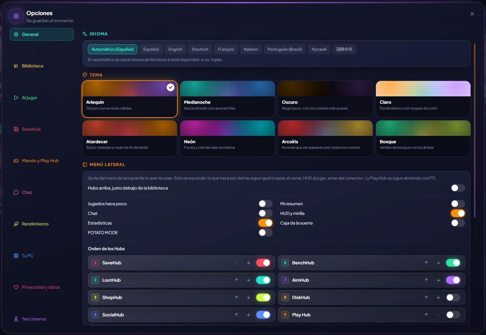

🎨
あなた好みに
テーマ、言語、GameHubの動作を自由に。
テーマを選べます（Arlequin、Midnight、真っ黒なDark、白背景のLight。ArlequinProならSunset、Neon、Rainbow、Forestも）。言語は英語、スペイン語、簡体字中国語、ロシア語、ポルトガル語（ブラジル）、ドイツ語、フランス語、イタリア語、日本語、ポーランド語（この 2 つはベータ版）に対応。スペックの低いPC向けには、アニメーション・透明効果・発光をなくす軽量モードもあります（ようこそ画面からすぐにオンにできます）。
GameHubはWindowsの起動時にシステムトレイで非表示のまま開始できます（別のランチャーでプレイしても、プレイ時間のカウントとセーブデータのバックアップができます）。自動で更新され（バージョンを飛ばした場合は、すべての新機能をまとめて表示します）、初回起動時にはストアごとのゲーム一覧を表示するので、ゲームではないものを削除できます。
オプション → 一般 → アップデートで「安定版のみ」を選べます。
オプション → プライバシーとデータでは、Arlequinの作者にアイデアや不具合を送れます（返信が欲しい場合はメールアドレスかDiscordも添えられます）。重要なお知らせがあるときは、ウィンドウ上部にArlequinからの通知が表示されます。
使い方
- オプション：各ページの上部に、そこで設定できることが説明されています。

✦ その他の機能